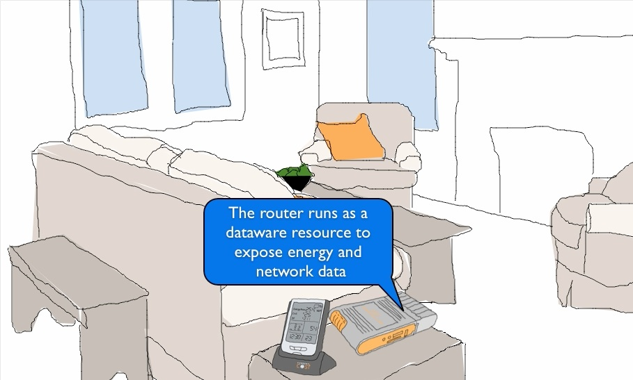

<?xml version="1.0" encoding="utf-8"?>
<section data-markdown class="title center">
  <script type="text/template">
    # User-Centric Networking: Nottingham/Cambridge Workplan

    __Richard Mortier__
    <small>
      <richard.mortier@nottingham.ac.uk>, <http://keybase.io/mort>
    </small>
    <br />

  </script>
</section>

<section>
  <section data-markdown>
    <script type="text/template">
      ## Outline

      + UCN: The Project
      + Signposts
      + <http://keybase.io>
      + Status of UCN-relevant work @ Nottingham
    </script>
  </section>
</section>

<section>
  <section data-markdown>
    <script type="text/template">
      ## User-Centric Networking, UCN

      EU FP7-ICT-2013-10-1.6 STREP

      <div class="block">
        <h3>Fundamental research challenge:</h3>
        <p>
          how to re-center future connected media services on the user and
          develop improved content recommendation and content delivery
          frameworks by taking into account rich user context information.
          <br/>
          ...
          <br/>
          how to enable intuitive and frictionless interaction with networked
          multimedia applications and services.
        </p>
      </div>
    </script>
  </section>

  <section data-markdown>
    <script type="text/template">
      ## The Goal

      The goal of this project is to design a __UCN system architecture for
      user-centric connected media services__. We will build UCN upon three
      complementary research pillars:

      1. understanding user context,
      2. profiling and predicting user interests,
      3. and personalizing content delivery.

      <div><p></p></div>

      > The key enabling abstraction is that of a __Personal Information Hub__
    </script>
  </section>

  <section data-markdown>
    <script type="text/template">
      ## Personal Information Hub

      We will construct a __scalable, provenance-tracking__ Private Storage
      Container that can hold a __lifetime&rsquo;s worth of personal data__, and
      __provide fast search capabilities to other services__.

      The Private Storage Container will likely __reside in a non-expert,
      resource-constrained environment__. It needs to be __largely
      self-configuring__ and to __integrate power-management and sleep modes__,
      where appropriate.

      <div class="block">
        <h3>Technologies:</h3>
        <p>
          Mirage + Signposts + Irminsule + ...
        </p>
      </div>
      Needs to be deployable. Needs to support apps, eg., recsys.

    </script>
  </section>
</section>

<section>
  <section data-markdown>
    <script type="text/template">
      ## Signposts

      We want control of our online identities.

      Use DNS to enable __personal clouds__, making it easy to deploy apps that
      function securely and efficiently using our personal devices, connected
      via the Internet edge.

      Rely on naming &ndash; specifically DNS &ndash; manipulation. But that's
      ok:

      > &ldquo;DNS servers can play games. As long as they appear to deliver a
      > syntactically correct response to every query, they can fiddle the
      > semantics.&rdquo;<span style="padding-left: 1em">&mdash; RFC3234</span>

      + Active Name Resolution: DNS
      + Identity Management: DNSSEC+DNSCurve
      + Programming Model: `libfable`

      </div>
    </script>
  </section>

  <section data-markdown>
    <script type="text/template">
      ## Architecture

      

      At the edge, devices interconnect using tunnels created in response to
      authenticated (DNSSEC), confidential (DNSCurve) queries. Connections
      access-controlled via authenticated (DNSSEC) query source.

    </script>
  </section>

  <section data-markdown>
    <script type="text/template">
      ## Key Components

      __Identity Management__

      + _Personal Trust Hierarchy_: Automate key management for SSH, PGP, ...
      + _Bootstrap Devices_: Establish public keys; passwordless resolution

      ----

      __Active Name Resolution__

      + _Efficient_: Incremental, parallel resolution (0 TTL; many answers)
      + _Graceful Degradation_: P2P&ndash;personal public resolver&ndash;shared
        provider
      + _Seamless Operation_: With extra host support (e.g., OpenFlow)

      ----

      __Programming Model__: Couple name resolution (`getaddrinfo(3)`) with
      connection (`connect(2)`) to remap connections without service
      interruption (late binding, path optimisation).

    </script>
  </section>
</section>

<section>
  <section data-markdown>
    <script type="text/template">
      ## <http://keybase.io>

      Public key directory.

      Will store private keys &mdash; (encrypted, possibly using in-browser
      crypto) &mdash; if you let them.

      Social network proof-of-identity (github, twitter).

      Track/tracked relationships.

      API exists, under rapid development.

      Invites available...
    </script>
  </section>
</section>

<section>
  <section data-markdown>
    <script type="text/template">
      ## Nottingham UCN-Related Work

      __Data collection__: <br/>
      Tom Lodge, Tosh Brown, Renata Teixeira (INRIA), Anna-Kaisa (INRIA)

      ----

      __Identity management__: <br/>
      Dominic Price (CREATe)

      ----

      __Dataware__: <br/>
      Tom Lodge, Neelam Bhandari, Sultan Alanazi, James Goulding

      ----

    </script>
  </section>

  <section data-markdown>
    <script type="text/template">
      ## Data Collection

      Helping to build a better HostView. Want to identify __activities__ in
      (augmented) network data. \[[SIGCOMM W-MUST'11, Brundell et
      al](http://www.cs.nott.ac.uk/~rmm/papers/pdf/wmust11-homework.pdf)]

      ----

      Collation of multiple data sources, but require ground truth for
      labelling.

      Ethnographic studies, including presentation of trace data back to
      participants for interactive labelling.

      Data collection via VPN, with on-device process and location monitoring.

      UK ethics approval in process. French process awaits.

    </script>
  </section>

  <section data-markdown>
    <script type="text/template">
      ## Identity Management

      Comes out of the [CREATe](http://create.ac.uk) programme (RCUK Centre for
      Copyright and New Business Models in the Creative Economy).

      Clearing house and social smarts for all social network interactions:

      + Content is emails + MIME attachments in `maildir` format
      + Currently rx/tx: Twitter, Facebook
      + Mutt as UI (currently!)
      + Keybase integration in progress

      <br/>Next steps:

      + Contact management
      + IMAP (+POP?) integration

    </script>
  </section>

  <section data-markdown>
    <script type="text/template">
      ## Dataware

      

      Authorised data processing requests are executed on the hub after signing
      by the catalog.
    </script>
  </section>

  <section data-markdown>
    <script type="text/template">
      ## Dataware

      

      Prototype is a modified home router plus some energy monitoring.
    </script>
  </section>
</section>

<section>
  <section data-markdown>
    <script type="text/template">
      ## Discussion...

      We need a *__Plan&trade;__*

      + What are the use cases?
      + What are we building?
      + How are we supporting it?
      + What are the timelines?

      <br/>
      ...and then Pub!

    </script>
  </section>
</section>
